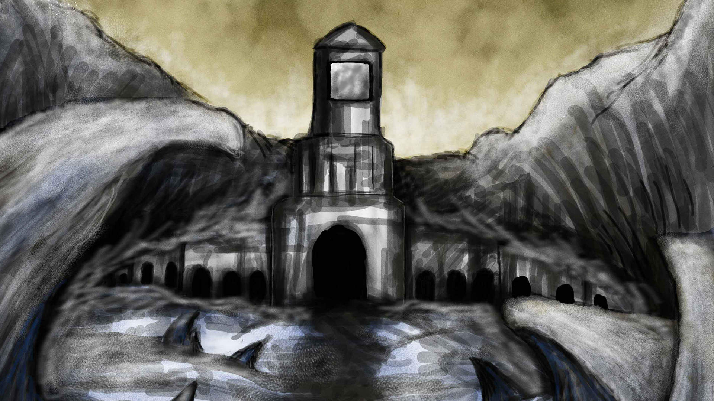

What!?! You want to play a HTML5 game without javascript? The only kind of game I think I will be able to create with static html pages is those "choose your own advanture" kind of books. Or if you actually want to see the game code look at `game/states/play.js`.

Loading...
About